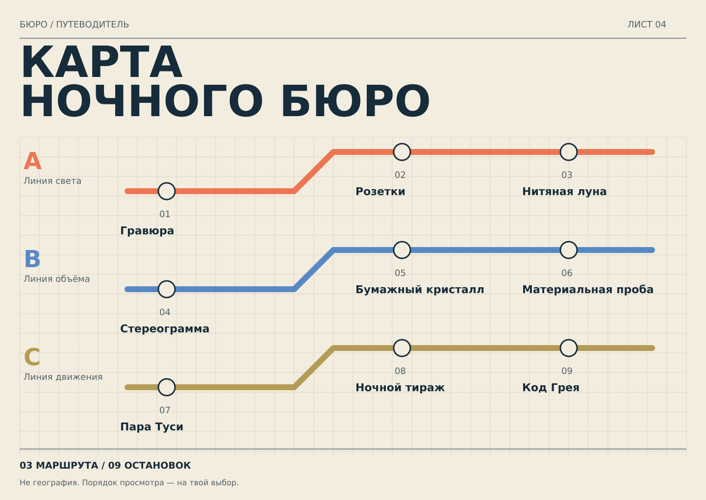

A · Линия света: 01 Гравюра → 02 Розетки → 03 Нитяная луна
B · Линия объёма: 04 Стереограмма → 05 Бумажный кристалл → 06 Материальная проба
C · Линия движения: 07 Пара Туси → 08 Ночной тираж → 09 Код Грея